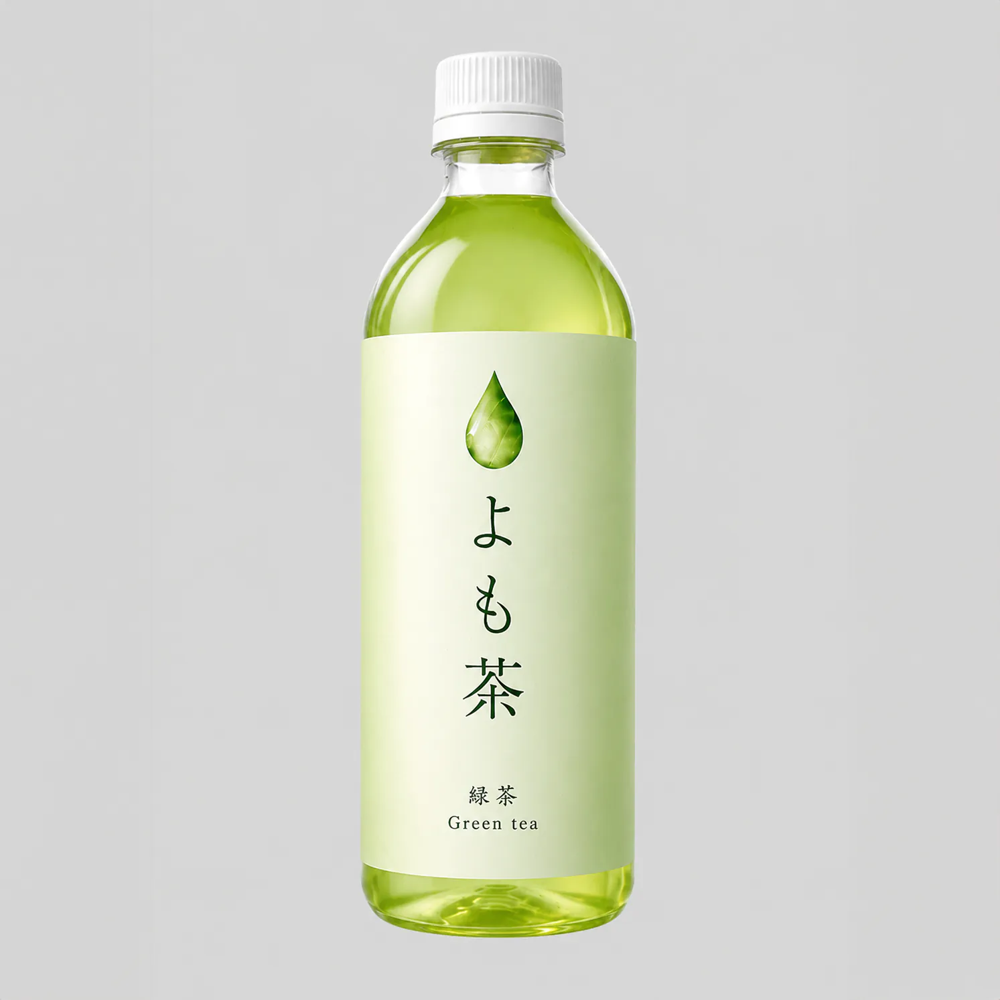
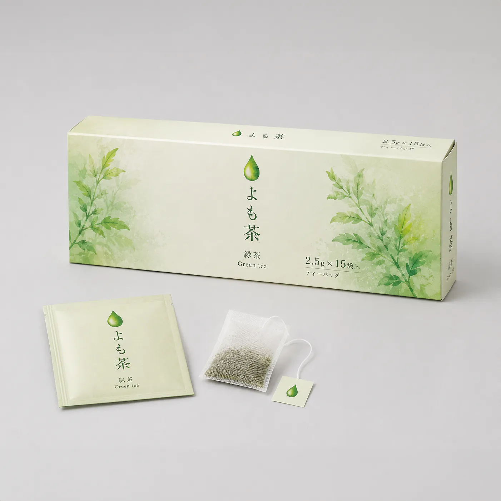
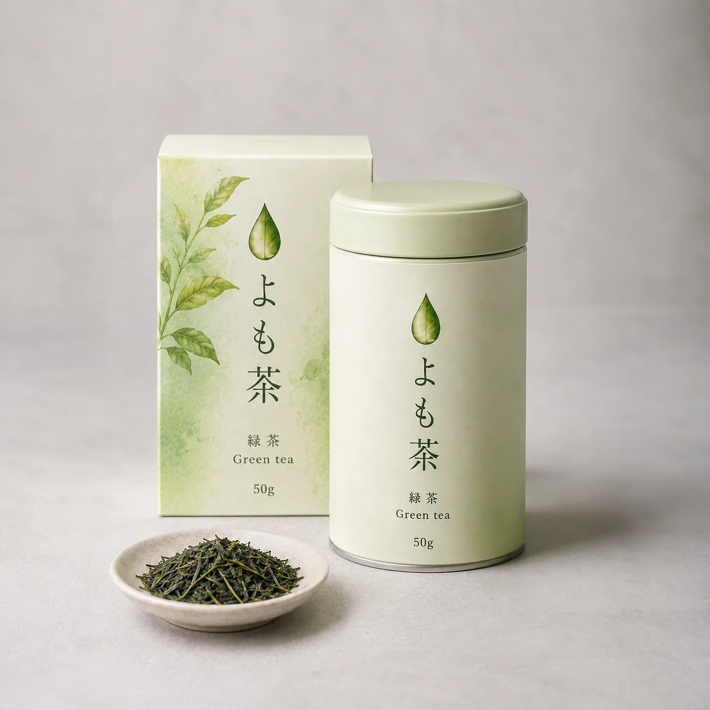

YOMOCHA — Quiet Hours in Green
茶葉ひとさじから始まる、静かな緑の時間。
日常にすっとなじむ手軽な一本から、急須でゆっくり淹れる本格の一杯まで。
ふだんを少しととのえる、よも茶のシリーズです。

そのまま、冷たく、毎日のそばに。
ふくよかな茶香、ほのかな甘み。氷を入れてもにごらないクリアな後味。
”急須いらずでいつでも本格的な緑茶を。火入れ直後の青々しさを封じこめた、ペットボトル詰めの一本。デスクの上に、移動の途中に、場所を選ばずに手にとれる毎日の一杯です。

一袋に、一服のしずけさを。
一煎目はやさしく澄み、二煎目で旨味がふくらむ、2色の表情。
”茶葉そのものの香りを引き出すコットンで包んだティーバッグタイプ。お湯を注ぐだけで、急須を使ったときと同じ豊かな茶香が立ちのぼります。来客時にも、自分時間にも、ふと添えやすい手軽さです。

ひと匙ごとに、立ちのぼる香り。
青葉のいきいきとした香り、ふくよかな旨み、湯気のなかに広がる甘やかな余韻。
”
小山田園の茶葉を厳選し、密閉性の高い缶に丁寧に詰めました。
湯を注ぎ、香りを待ち、ゆっくりと口にふくむ。急須で淹れるその時間が、日常の輪郭をやさしくととのえてくれます。